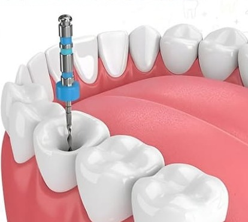

Save your smile with root canal treatment
Relieve pain, save your natural tooth and stop infection from spreading.

Don’t let a damaged tooth affect your smile
A root canal removes the infected or inflamed pulp from inside the tooth, cleans the canals and seals them. The tooth stays in your mouth and you keep chewing naturally.
- Pain relief
- Save your natural tooth
- Prevent infection spread
- Improve oral health
When you may need one
Only an exam and X-ray can confirm, but these are common signs.
Severe or night pain
Throbbing pain that does not settle or wakes you up.
Lingering sensitivity
Pain to hot or cold that stays long after the drink is gone.
Swelling or a gum pimple
Swelling near the tooth or a small bump on the gum.
Darkened tooth
A tooth that changes colour after injury or decay.
What happens during treatment
A typical root canal is done in clear, comfortable stages.
Exam and X-ray
We find the cause and explain your plan.
Numbing
The area is numbed so the treatment is comfortable.
Cleaning the canals
Infected pulp is removed and canals are shaped and disinfected.
Sealing and restoring
Canals are sealed and the tooth is rebuilt, often with a crown.
Root canal myths
“It is very painful”
Modern numbing makes it comfortable. The pain comes from the infection, and treatment relieves it.
“Pulling the tooth is easier”
Saving your natural tooth is usually better for chewing, bite and nearby teeth.
“Early treatment is simpler”
Seeing us at the first sign of pain often means a quicker and easier treatment.
Root canal questions
How long does a root canal take?
It depends on the tooth and infection. Many take one or two visits. We will tell you after the exam.
Will I need a crown afterwards?
Often yes, especially for back teeth, because a crown protects the treated tooth from cracking.
Can I eat after treatment?
Wait until the numbness wears off. We will give you simple aftercare instructions.
Your smile deserves expert, gentle care
Book a visit with Dr. M. Nirmal Kumar MDS. We will confirm your time by call or WhatsApp.